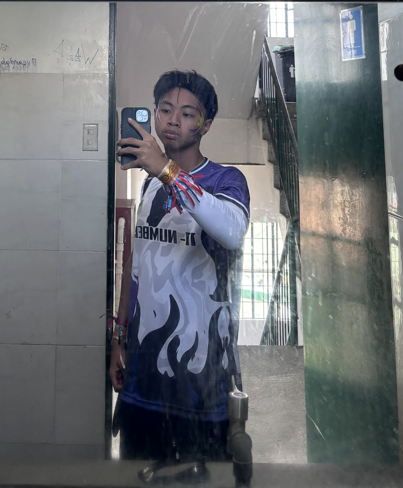
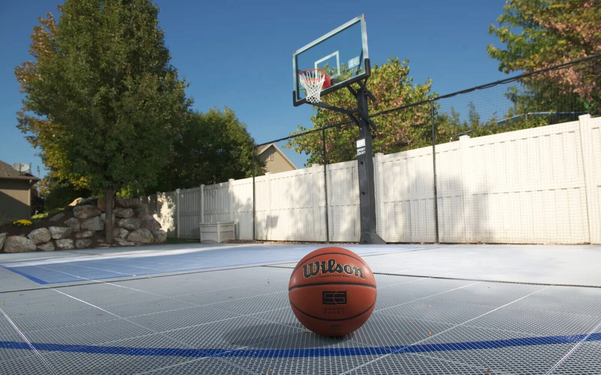
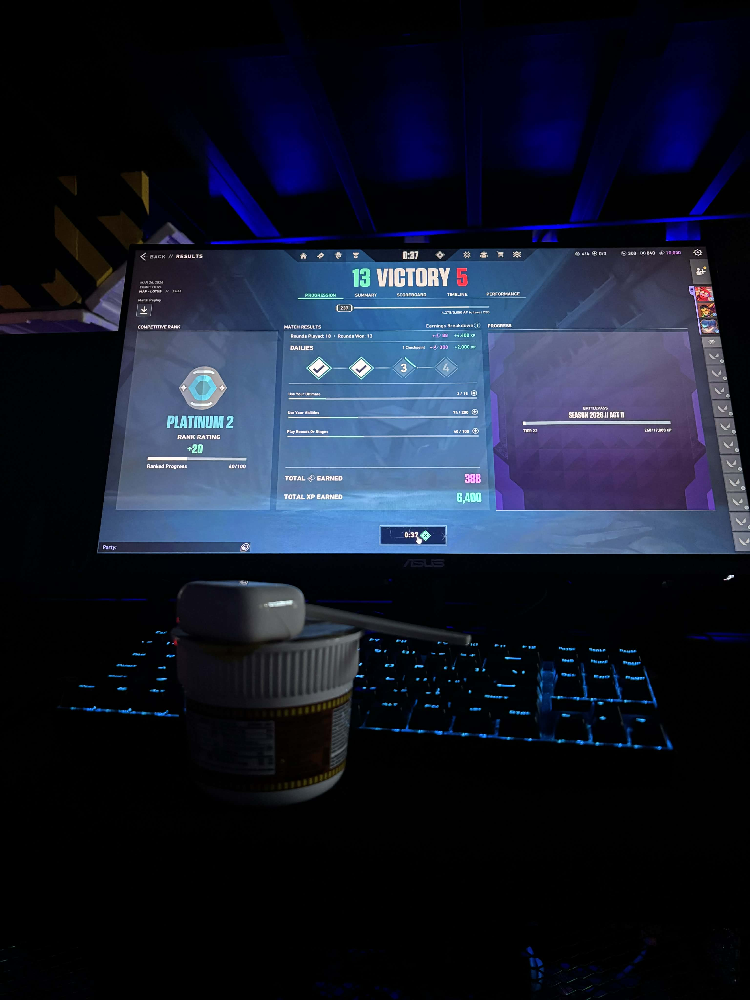

Welcome to my personal website. Here, I share a bit about myself and my hobbies.
Hi! I'm Alzoe, a gamer and a Grade 11 TVL - ICT student. I love exploring the world through video games
and the internet.
I live in Imus, Cavite, and I have one little sister who also loves to play online games! However,
outside of online games or the internet, I love playing basketball with my father. I am also focused on
achieving my academic goals. I aim to get high grades and become an honor student, which is why I limit
the time I spend on my hobbies.


🏀 Playing basketball is my one of my hobbies, because im enjoying this with my friends and also i love the relationship the basketball make. I also want basketball because it give me a give me a healthy benefits.

🎮 Gaming is also my most favorite hobby because it allows me to escape into real worlds, I mean while I’m playing, I can forget all of my problems and just enjoy the game. Also, in online games, I can make more friends and learn new skills like problem solving, strategy, and teamwork. Plus, it challenges my reflexes and decision-making, which keeps my mind sharp. Whether I’m exploring new game stories or just hanging out with friends, it’s always an exciting and rewarding experience.